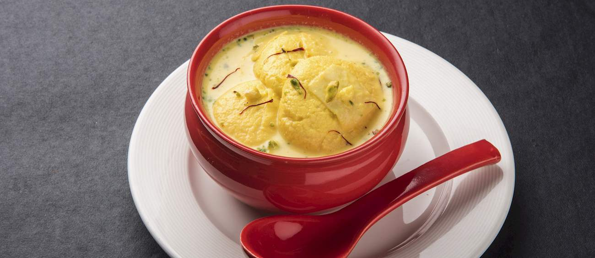

Home
Ras Malai

Description
Roshmalai or ras malai is a popular Bengali and Indian dessert consisting of milk, sugar and cardamom-flavored paneer cheese known as chhana. Almonds, cashews, and saffron are often added to the dessert. Roshmalai is of Bengali origin, and is sometimes described as a rich cheesecake without a crust. The name of the dessert is a combination of two Bengali words, rosh, meaning sap, and Hindustani word malai, meaning cream. It is typically served chilled and garnished with cardamom seeds or dried fruits. This delicious dessert is most popular during the festivals such as Holi and Diwali.Spongy, tender, and aromatic, this Bengali classic is usually served at the end of a meal.
Ingredients
- Full-fat milk
- Sugar
- Water
- Ice cubes
- Saffron strands
- Cardamom powder
- Almonds
- Pistachios
- Cashews
- Lemon juice or vinegar
Steps
- Boil one liter of full-fat milk in a pot.
- Turn off the heat and stir in lemon juice until the milk curdles completely.
- Drain the cheese through a cheesecloth and rinse it with cold water.
- Hang the cheese in the cloth for 45 minutes to drain out the excess water.
- • Knead the cheese on a flat surface with your palm for 5 to 7 minutes until completely smooth.
- Roll the smooth dough into 12 small balls and flatten them into smooth discs with no cracks.
- Boil another liter of milk in a separate pan and simmer it until reduced by half.
- Mix a half cup of sugar, a pinch of saffron, and cardamom powder into the reduced milk.
- Set this thickened saffron milk aside to cool slightly.
- Boil one and a half cups of sugar with five cups of water in a wide pot to make syrup.
- Drop the cheese discs into the boiling syrup, cover with a lid, and cook for 15 minutes.
- Transfer the cooked discs into a bowl of ice-cold water for 5 minutes to stay spongy.
- Gently squeeze the water out of each disc between your palms.
- Drop the squeezed discs into the warm saffron milk.
- Refrigerate the dish for 4 hours and serve cold with chopped almonds and pistachios.